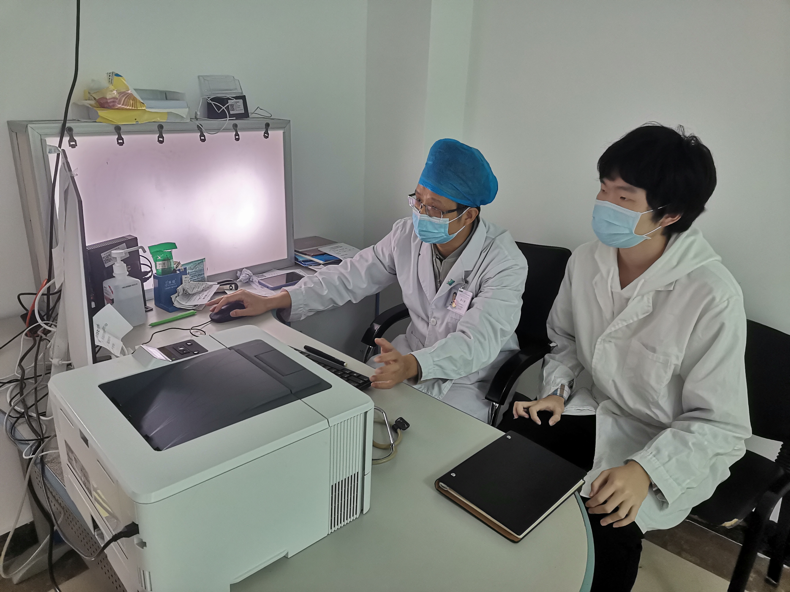
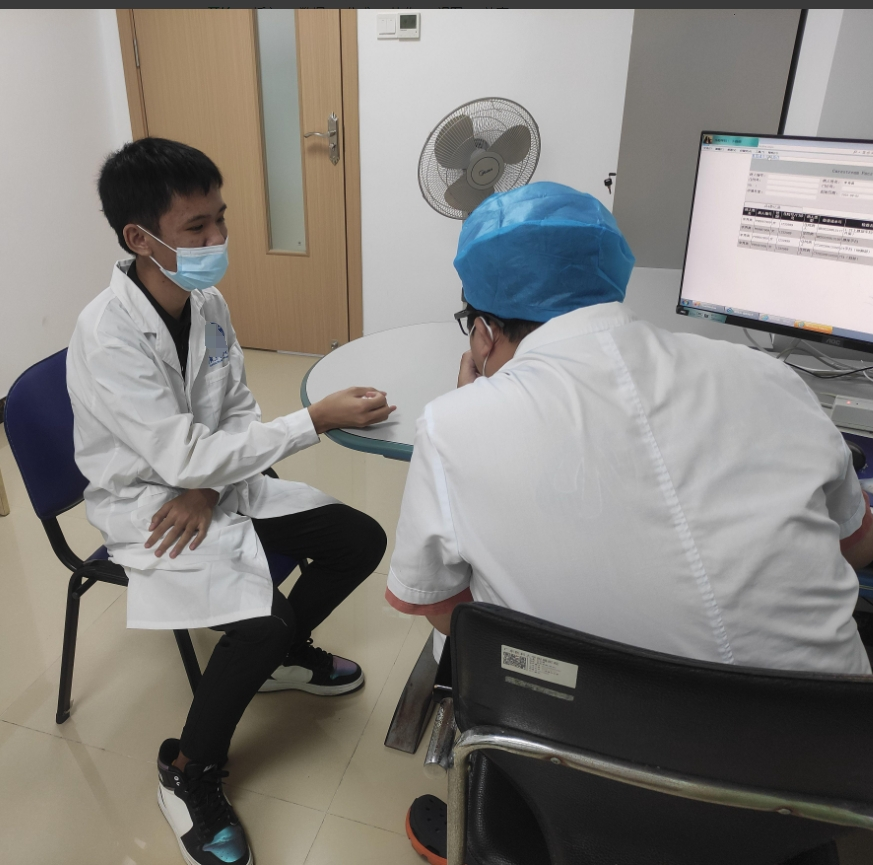
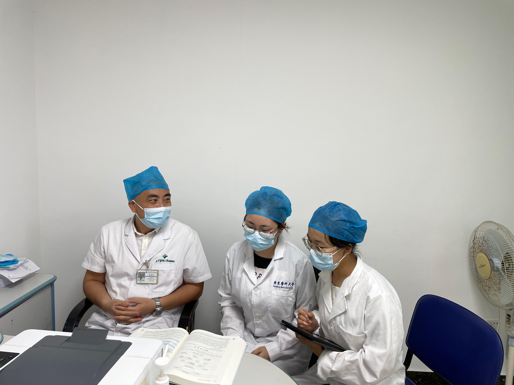
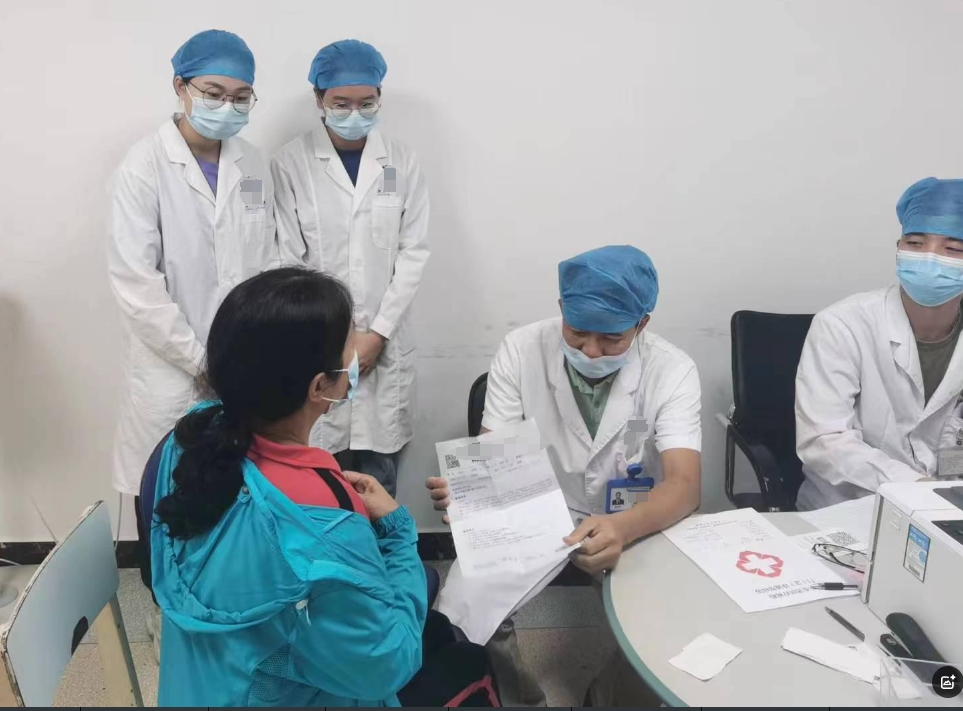
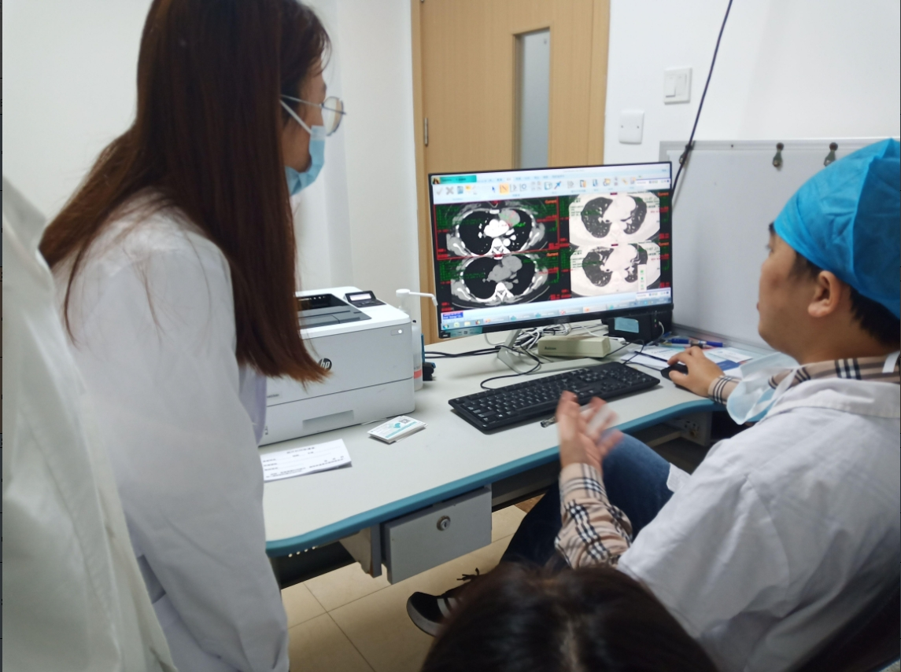

临床医学人才培养特色项目
让学生尽早走近临床、理解临床、热爱临床
以门诊预约观摩和“临床医生面对面答疑”为载体，盘活全院优质教师资源，形成预约、实施、评价、反馈、改进的全过程记录。
项目持续运行2021—至今专家现场展示样版
学生参与人次5862021—2023，经项目总结核对
教师参与人次1022021—2023，经项目总结核对
已结构化预约时段1722023—2025原始预约表占用时段
2025参与教师30覆盖14个原始专科标签
门诊观摩典型瞬间
真实活动照片自动滚动展示，也可左右滑动

带教教师现场指导
学生与带教教师交流
门诊观摩学习讨论
门诊现场观摩
教师结合影像开展教学照片为项目真实活动记录。点击照片可查看完整画面。
项目参与规模
“人次”为项目总结口径，教师与学生使用双坐标轴
2025年下半年预约专科分布
按原始表已占用预约时段统计
历史数据归档
原表保留，标准字段与证据关联分层存储
| 数据批次 | 参与教师 | 已占用时段 | 照片/证据关联 | 状态 |
|---|---|---|---|---|
| 2023年下半年 | 24 | 95 | 60 | 已结构化 |
| 2024年上半年 | 23 | 21 | 9 | 已结构化 |
| 2025年下半年 | 30 | 56 | 15 | 已结构化 |
说明：历史表中的“占用时段”不直接等同于“学生参与人次”，两个指标分别呈现，避免混用。
最受学生欢迎教师 TOP 3
按学生预约与评价综合排序 · 演示口径
1
魏劲松
骨科中心
28人次评价 4.9
2
王坚
泌尿外科
24人次评价 4.8
3
吴泽勇
整形外科
21人次评价 4.8
积极参与学生排行
按完成观摩次数排序，专家端仅展示脱敏信息
1
陈*通
2023级临床医学
8次完成观摩
2
李*明
2023级临床医学
7次完成观摩
3
周*华
2024级临床医学
6次完成观摩
预约门诊观摩
按专科、教师和时间选择适合自己的早临床学习机会
首次使用需完成“微信账号 + 姓名 + 学号”匹配。系统仅允许已导入白名单的本校学生预约。
魏
魏劲松
周日上午 10:00—11:00门诊四楼脊柱外科门诊
剩余 2 个观摩名额
王
王坚
周二下午 15:00—17:00门诊四楼1号诊室
剩余 1 个观摩名额
吴
吴泽勇
周四下午 15:00—17:00门诊六楼整形外科2诊室
已满，可候补
教师姓名、专科和时段取自2025年历史预约表；头像、简介和剩余名额为界面演示，正式上线后由教师或教学秘书维护。
教师工作台
管理出诊观摩时段，确认学生到场与学习完成情况
本学期接收学生18 人次演示数据
累计指导时长31.5 小时演示数据
学生平均评价4.9 / 5演示数据
近期观摩安排
学生姓名仅向对应教师和教学秘书展示
陈
陈*通（已脱敏）
待到场周日上午 10:00 · 预约观摩
李
李*明（已脱敏）
已完成上周日 · 实际观摩 1.5 小时
本周时段
周日上午 10:00—11:00
门诊四楼 · 已预约 2/4
临时停诊或地点变更
变更后自动通知已预约学生
教学秘书工作台
统一管理学生、教师、预约时段、历史数据和专家展示
👥
学生白名单
导入学号、姓名、班级，校验微信绑定。
🩺
教师与时段
维护专科、简介、地点、容量和停诊。
🗂️
历史数据迁移
保留原表、规范字段并记录来源位置。
✅
证据审核
审核观摩照片、时长、反思与教师评价。
历史数据迁移进度
本样版已读取用户提供的三个主要年度文件
| 批次 | 原文件 | 清洗结果 | 证据状态 |
|---|---|---|---|
| 2023下 | 已归档 | 95条占用时段 | 60条关联 |
| 2024上 | 已归档 | 21条占用时段 | 9条关联 |
| 2025下 | 已归档 | 56条占用时段 | 15条关联 |
数据治理规则
01
原始数据只读归档
保留文件名、工作表、单元格位置和导入时间
02
原值与标准值并存
专科名称、日期、时长等统一编码但不覆盖原值
03
证据与状态分离
预约、到场、完成、待核验、取消分别记录
04
最小化展示个人信息
专家端脱敏；严禁上传患者身份及诊疗隐私